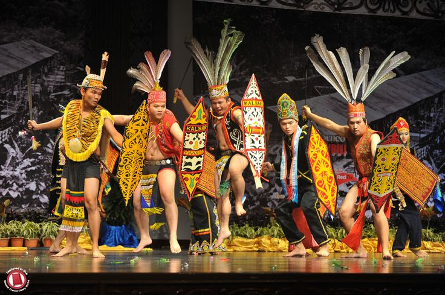
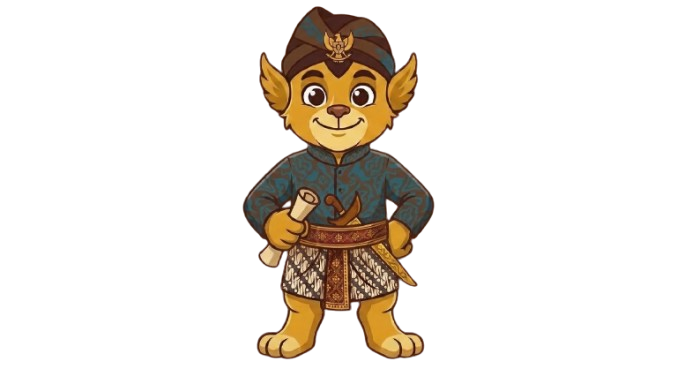

16
elemen budaya Indonesia tercatat pada daftar dan register UNESCO
UNESCO · halaman Indonesia · per Oktober 2026
Budaya hidup melalui ingatan, dan bertahan melalui catatan. Mari kenali, dokumentasikan dengan izin, dan wariskan pengetahuan dari lingkungan terdekat.
Angka berikut disertai lembaga, cakupan, dan periode datanya agar dapat diperiksa kembali.
Pengetahuan yang diwariskan lisan perlu dicatat dengan cara yang menghormati penutur.
Foto, rekaman, dan catatan mudah kehilangan asal serta konteks bila disimpan sendiri-sendiri.
Pelestarian dapat dimulai dari lingkungan dekat dengan meminta izin dan melibatkan komunitas.
Perbincangan tentang tayangan Tari Pendet pada 2009 mengingatkan pentingnya memeriksa atribusi dan mencatat koreksi dengan cermat.
Setiap entri memiliki tahun dan konteks berbeda. Pengakuan bersama juga menunjukkan bahwa warisan budaya dapat dirawat lintas komunitas dan negara.
Batik Indonesia masuk Daftar Representatif Warisan Budaya Takbenda UNESCO pada 2009. Hari Batik Nasional ditetapkan pada 2 Oktober melalui Keputusan Presiden Nomor 33 Tahun 2009.
UNESCO memasukkan seni pertunjukan Reog Ponorogo ke Daftar Warisan Budaya Takbenda yang Membutuhkan Perlindungan Mendesak. Catatan UNESCO menyoroti sulitnya menemukan maestro dan meneruskan keterampilan kepada generasi muda.
Angklung Indonesia masuk Daftar Representatif UNESCO pada 2010. Permainan ansambelnya mengandalkan kolaborasi agar melodi dapat terbentuk dari nada-nada yang berbeda.
Kebaya (2024), Pantun (2025), serta praktik budaya terkait Kolintang dan Balafon (2024) tercatat sebagai pengakuan bersama beberapa negara.
Catatan yang baik menyebut asal dan sumber, meminta izin, serta memberi ruang pada komunitas untuk menjelaskan tradisinya sendiri.

Mulai dari tradisi, karya, bahasa, atau cerita yang dekat.
Jelaskan tujuan dan minta persetujuan pelaku budaya atau narasumber.
Tuliskan asal, tanggal, versi, dan sumber yang dapat diperiksa.
Simpan dengan rapi agar dapat dipelajari dan diwariskan kembali.

Catat tradisi, asal, sumber, dan izin agar pengetahuan budaya tersimpan dengan konteks yang jelas.
Mulai mengarsipkanUji wawasan tentang budaya Nusantara lewat pertanyaan singkat dengan penjelasan di setiap jawaban.
Coba kuisJelajahi cerita dalam beragam versi, dengan ruang untuk mengenal asal dan konteks penuturannya.
Jelajahi ceritaRujukan primer dipakai untuk tahun dan status UNESCO; data bahasa mengacu pada pemetaan Badan Bahasa yang diberitakan ANTARA.
Data dan halaman sumber diperiksa 27 Oktober 2026. Angka UNESCO dapat berubah bila ada inskripsi baru; jumlah bahasa mengikuti periode pemetaan yang tertulis pada sumber.